창호종합기계CHANGHO INC
104. 서보 탭핑기
055-327-4112
055-327-4112
Permanent Magnetic Lifter — WTM-MC Series
마그네틱 척으로 소재를 흡착 고정합니다
PERMANENT MAGNETIC LIFTER · 300KG / 600KG · LEVER ON-OFF
서보 탭핑기는 암이 길어 탭을 가공할 때 베이스에 반력이 걸립니다. 그렇다고 작업대에 볼트로 고정하시면 다음 작업에서 위치를 바꾸기 어렵습니다. 마그네틱 척을 베이스 아래에 두시면 레버 한 번으로 그 자리에 고정되고 레버 한 번으로 다시 풀리며, 작업대에 구멍을 내거나 전원 코드를 끌어올 일 없이 쓰실 수 있습니다.
2종 · 300 / 600KG무전원 영구자석레버 한 번으로 고정 · 해제작업대 타공 불필요
모델 선정 · 견적 문의스마트스토어 바로가기
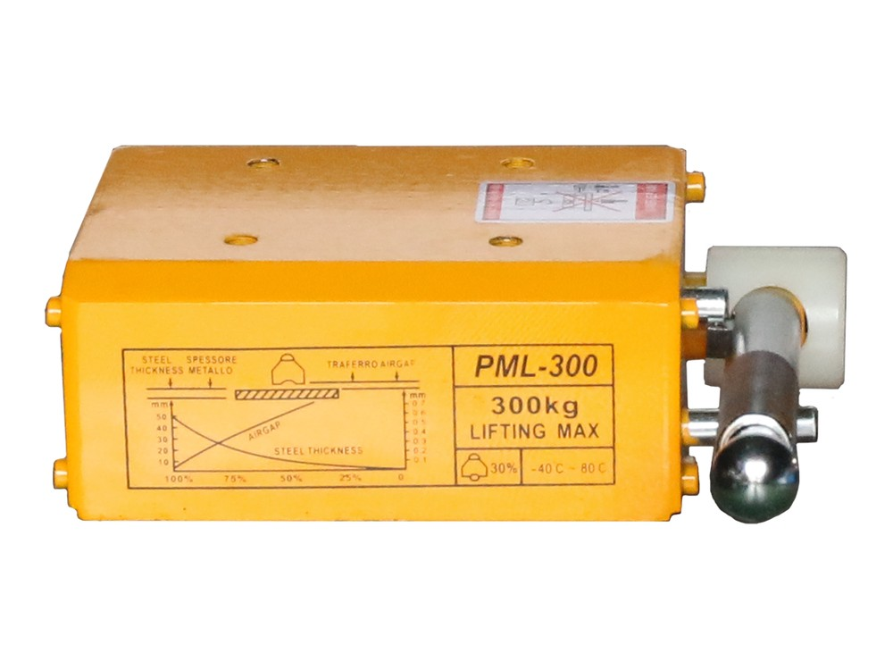
300 / 600kg
리프팅 최대
0W
소비 전력 — 무전원
10 / 24kg
본체 자중
−40 ~ 80℃
사용 온도 범위
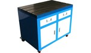
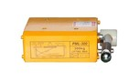
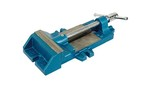
이 계열 3품목 — 아래에서 기종별 사양을 보실 수 있습니다
Video
제품 소개 영상
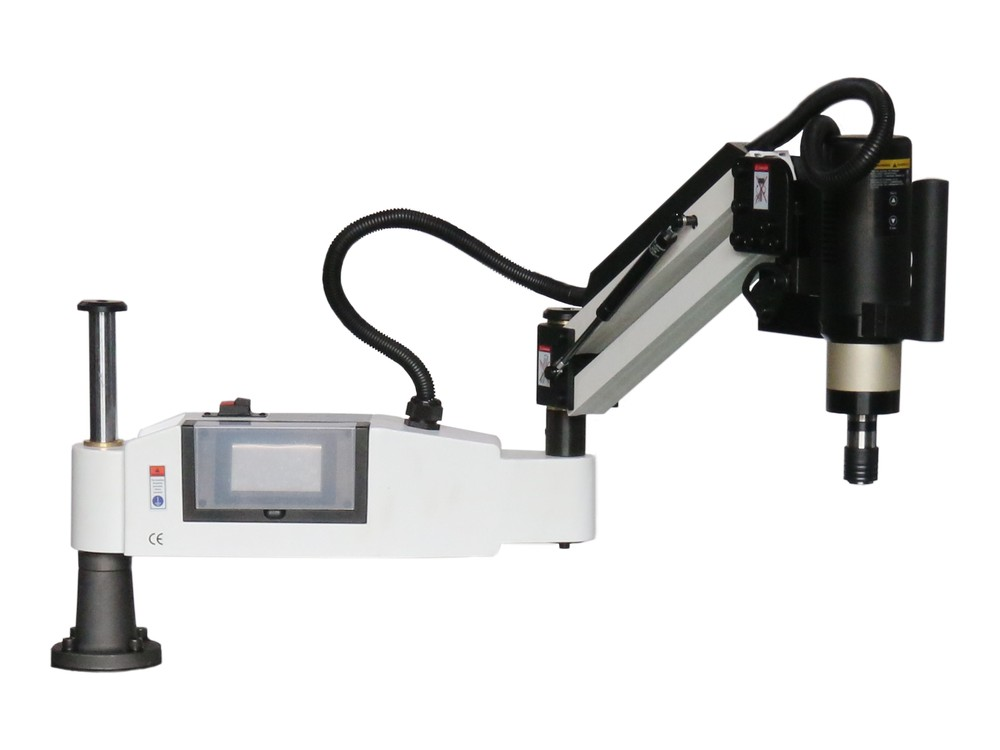
서보 탭핑 머신 작업 영상 — 마그네틱 척을 함께 쓰는 본체 · 창호종합기계 유튜브
Selling Points
연락 주신 분들이 궁금해하신 것
마그네틱 척을 처음 구매하실 때 가장 자주 나오는 세 가지를 앞에 정리했습니다. 아래 내용은 300KG · 600KG 두 규격에 공통이며, 달라지는 값은 리프팅 능력과 외형 치수, 자중입니다.
01
볼트 없이 고정하고, 레버 한 번으로 옮깁니다탭핑기 본체 베이스 아래에 두고 레버를 젖히시면 그 자리에 고정됩니다. 위치를 바꾸실 때는 레버만 되돌리십시오. 작업대를 가공하지 않고 쓰시므로 다음 작업에서 자리를 다시 잡으실 수 있습니다.
02
영구자석이라 전원 없이 작동합니다영구자석 방식이라 배선과 컨트롤러 없이 씁니다. 정전 시에도 자력이 그대로 유지되어 고정한 것이 붙어 있습니다. 전기료와 작업대 위 배선이 함께 빠집니다.
03
표기값은 최적 조건에서의 값입니다300kg · 600kg 은 두께가 충분한 평면 강재에 완전히 밀착했을 때의 값입니다. 소재가 얇거나 표면에 녹 · 도장 · 기름이 있으면 실제 값은 그보다 내려갑니다. 본체 라벨에 두께별 감쇠 그래프가 인쇄되어 있으니 그 곡선을 기준으로 보시고, 판단이 어려우시면 저희가 소재 조건으로 산정해 드립니다.
Control
표기 자력과 실제 사용 조건을 꼭 확인하십시오
가장 많이 문의하시는 항목이라 따로 적어 둡니다. 본체 라벨의 그래프는 가로축이 강재 두께, 세로축이 접촉면 틈입니다. 소재가 얇아질수록, 틈이 벌어질수록 붙는 힘이 가파르게 떨어진다는 뜻입니다. 라벨에는 안전계수 30% 표기도 함께 있습니다. 들어 올리는 용도로 쓰실 계획이면 표기값이 아니라 실제 소재 조건을 기준으로 산정하셔야 합니다. 쓰실 소재의 두께와 표면 상태를 알려 주시면 저희가 여유를 두고 규격을 제안해 드립니다.
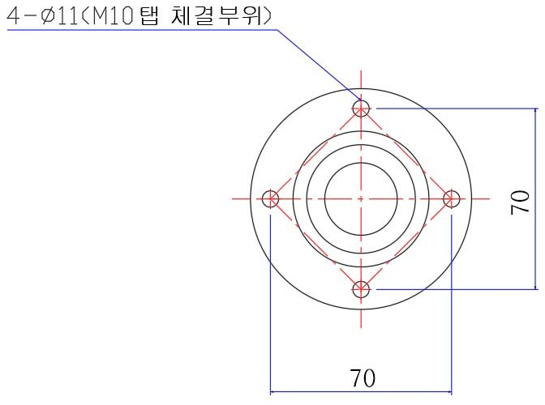
600
kg 리프팅 최대 · 600KG
0
W 소비 전력 · 무전원
70×70
mm M10 탭 체결 피치
2
종 · 300 / 600KG
Supply Journey
수입부터 사후 관리까지, 저희가 직접 합니다
중간 유통을 거치지 않습니다. 컨테이너로 직접 들여와 전시장에 세우고, 시연하고, 포장해 보내고, 고장 나면 받아서 고칩니다.

01
대량 수입
컨테이너 단위로 직수입합니다. 한두 대씩 들여오는 방식이 아니라 라인업 전체를 한 번에 확보하기 때문에 재고에서 출고됩니다.

02
하역 · 검수
입고 즉시 외관·포장 상태를 확인하고 수량을 대조합니다. 이 단계에서 걸러진 건은 전시장에 올라가지 않습니다.

03
전시 보관
김해 전시장에 실물을 세워 둡니다. 카탈로그가 아니라 돌아가는 기계를 직접 보고 고르실 수 있습니다.

04
시연 · 테스트
구매 전 실제 소재로 탭을 내 보시고 결정하십시오. 탭 규격·소재·깊이를 지정해 주시면 그 조건 그대로 가공해 보여 드립니다.

05
포장 · 출고
본체와 다이를 파손 없이 고정 포장해 출고합니다. 재고 보유 품목은 당일 출고가 가능합니다.

06
입고 수리
고장 시 기계를 보내 주시면 저희가 직접 수리합니다. 퓨즈·척·서보 드라이브 등 소모·수리 부품을 자체 보유합니다.
그래서 기다리실 일도, 돌아다니실 일도 없습니다.
Selection
무게보다 접촉 조건을 먼저 보십시오
표기된 300kg · 600kg 은 최대치입니다. 실제로 붙는 힘은 소재 두께와 표면 상태, 접촉 면적이 결정합니다. 두 규격은 자력만 다른 것이 아니라 바닥 접촉 면적과 자중도 함께 달라집니다.
WTM-MC-300KG — 본체 고정 · 상시 사용
205 × 92 × 160 mm · 자중 10 kg · 리프팅 최대 300 kg. 탭핑기 본체를 세워 두거나 중소형 소재를 잡아 두는 상시 용도로 가장 많이 나갑니다. 한 손으로 들고 옮겨 다닐 수 있는 무게입니다.
WTM-MC-600KG — 대형 판재 · 이송
312 × 120 × 188 mm · 자중 24 kg · 리프팅 최대 600 kg. 바닥 접촉 면적이 넓어 대형 철판과 구조물을 옮기거나 중량 가공물을 잡아 둘 때 씁니다. 300KG 로 부족했던 현장에서 고르시는 규격입니다.
Model Line-up
두 규격 한눈에 비교
자력 방식과 작동 방식, 사용 온도 범위는 두 규격이 같습니다. 달라지는 것은 리프팅 능력과 외형 치수, 자중 세 가지뿐이라 고르실 때 보실 것이 많지 않습니다.
| # | 모델 | 리프팅 최대 | 외형 치수 (L × W × H) · 자중 · 주요 용도 | |
|---|---|---|---|---|
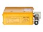 | 1 | WTM-MC-300KG | 300 kg | 205 × 92 × 160 mm · 10 kg · 중소형 소재 상시 고정 |
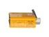 | 2 | WTM-MC-600KG | 600 kg | 312 × 120 × 188 mm · 24 kg · 대형 철판 · 구조물 이송 |
· 리프팅 값은 두께 충분 · 표면 청결 · 완전 접촉 조건의 최대치입니다. · 소재가 얇거나 틈이 있으면 실제 값은 내려갑니다. · 본체 라벨에 두께 대비 감쇠 그래프와 안전계수 30% 표기가 있습니다. · 작업대(WTM-WT-600X900)와 바이스(WTM-DV)는 별매입니다.
Specifications
두 규격 공통 사양
아래 항목은 300KG · 600KG 두 규격에 동일하게 적용됩니다. 달라지는 값은 위 표의 세 가지뿐입니다.
| 자력 방식 | 영구자석 — 외부 전원·배선 불필요 |
|---|---|
| 작동 방식 | 상부 레버 수동 ON / OFF 전환 |
| 소비 전력 | 없음 (0 W) |
| 사용 온도 | −40 ℃ ~ +80 ℃ |
| 안전계수 표기 | 본체 라벨 30% · 두께 감쇠 그래프 인쇄 |
| 체결부 | 상부 4-Φ11 (M10 탭) · 피치 70 × 70 mm |
| 라인업 | WTM-MC-300KG · WTM-MC-600KG |
| 형번 | PML-300 · PML-600 |
| 적용 소재 | 철·강판·주철 등 자성 금속 |
| 호환 | 서보 탭핑기 T 슬롯 작업대 · 일반 작업대 |
| 제품 상태 | 주문 제작 |
| 사후 관리 | 제조사 협업 · 입고 수리 · 소모품 보유 |
알루미늄비철철스테인리스
Real Product
실물 · 본체 물림 · 체결부
탭핑기 본체 아래에 물린 모습과 상부 체결부, 김해 전시장 시연 컷입니다. 사진 속 작업대와 서보 탭핑기 본체는 별도 품목이며, 이 페이지에서 공급하는 것은 마그네틱 척입니다.
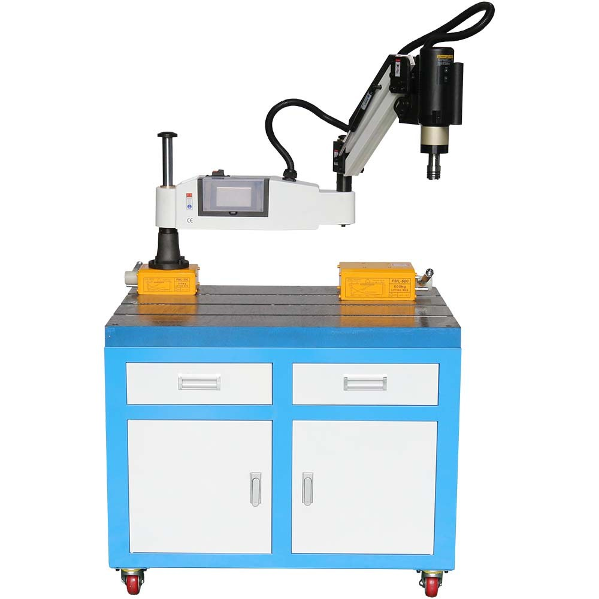
주철 T 슬롯 작업대 위 — 탭핑기 본체와 마그네틱 척 300 · 600KG
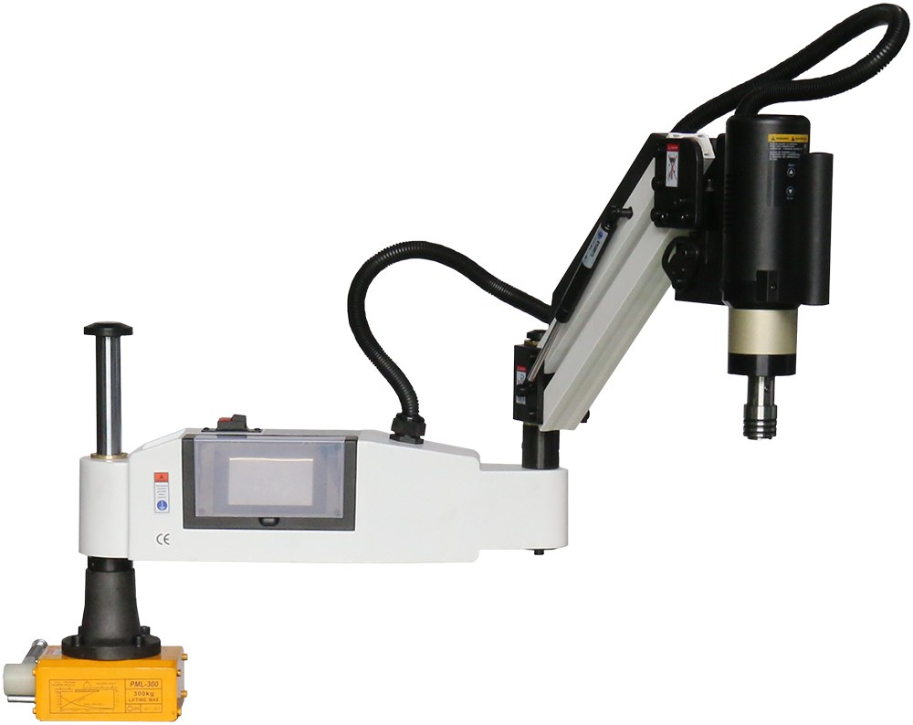
탭핑기 베이스 아래에 물린 WTM-MC-300KG — 볼트 없이 자리를 잡은 상태
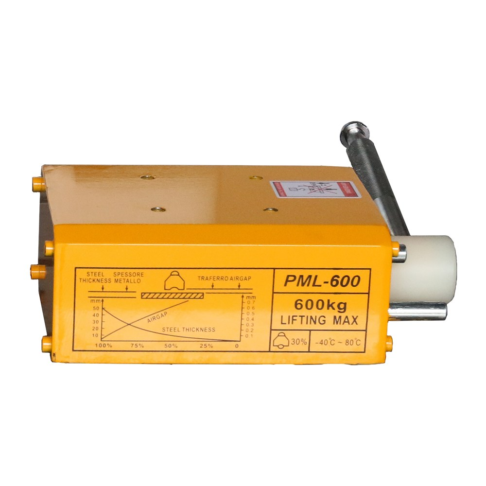
WTM-MC-600KG — 312 × 120 × 188 mm · 자중 24 kg
상부 체결부 — 4-Φ11 (M10 탭) · 피치 70 × 70 mm
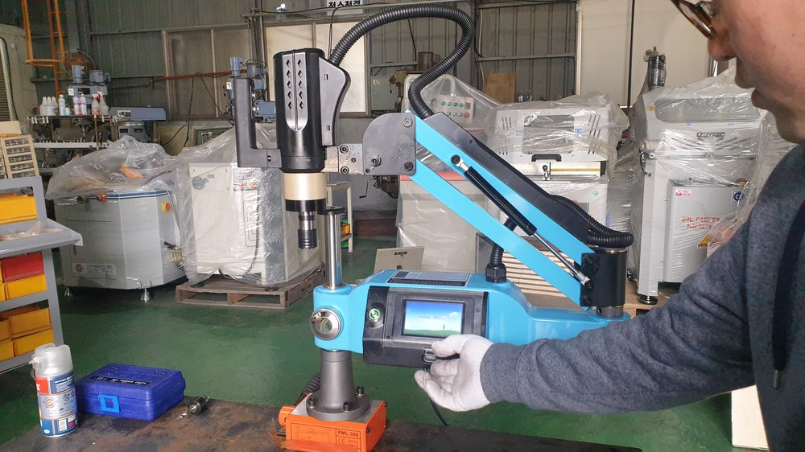
김해 전시장 시연 — 탭핑기 베이스를 잡고 있는 PML-300
Series Line-up
마그네틱 척을 올려 두는 자리
주철 작업대의 T 슬롯 상판 위에서 쓸 때 가장 안정적으로 고정됩니다. 함께 구매하시는 경우가 많은 두 품목입니다.
마그네틱 척 WTM-MC
2종 · 리프팅 300 / 600KG · 무전원 영구자석
주철 전용 작업대 WTM-WT
600 × 900 서랍형 · T 슬롯 · 자중 80 kg
정밀 바이스 WTM-DV
2종 · 4인치 죠 125 / 6인치 죠 150
Order & Shipping
주문 · 출고 안내
규격 선정
무엇을 고정하실 건지만 알려 주십시오. 탭핑기 본체를 세우실 건지, 소재를 물리실 건지, 들어 올리실 건지에 따라 맞는 규격이 달라집니다. 들어 올리는 용도면 표기값이 아니라 실사용 조건으로 여유를 두고 산정해 드립니다.
함께 쓰는 구성
주철 작업대(WTM-WT-600X900)의 T 슬롯 위에서 쓰시면 가장 안정적으로 고정됩니다. 작업대와 바이스는 각각 별도 품목입니다.
재고 · 출고
국내 재고 보유 품목은 신속 출고됩니다. 주문 전에 재고 상황을 확인해 드립니다.
사전 시연
시연은 김해 전시장에서 진행합니다. 실제로 잡아 보실 소재를 가져오시면 그 자리에서 붙는 힘을 확인하실 수 있습니다. 방문 일정은 아래 채널로 미리 예약해 주십시오.
사후 관리
저희가 직접 수입해 전시·판매하고 사후 관리까지 직접 합니다. 자력이 떨어지거나 레버가 고장 나면 김해에서 입고 수리하며, 수리가 안 되는 경우에는 리퍼 제품으로 교체해 드립니다.

수리 · 소모 부품 상시 보유 — 퓨즈 · 탭 척 · 서보 드라이브 등을 재고로 두고 있어, 입고 수리 시 부품을 기다리지 않습니다.

세트 상품 선택 구성 — 본체 + 주철 다이 600×900 + 마그네틱 척 300 / 600KG + 볼반 바이스. 쓰시는 조합으로 묶어 드립니다.
Channels
채널 안내
모델 선정 · 견적 문의
무엇을 고정하실 건지와 소재 조건을 알려 주시면 맞는 규격을 선정해 드립니다.
055-327-4112 대표
010-4465-4112 휴대전화
geonics@hanmail.net 이메일